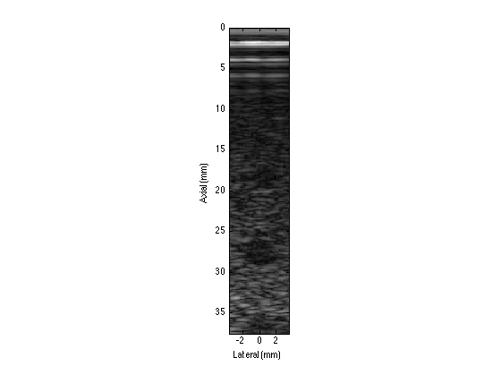

US Master Code
Contents
Start
clear;
Load Data and Constants
cd ./data/
[M,NumbLines,NumbElements,NumbSamples] = readBinData('imageData_PlaneWave.bin');
[ElementSpacing] = readTransducerParams();
[BeamSpacing, fs, FocusR, FocusT, FNumb, t0] = readImageParams();
[c] = readConstants();
cd ..
Other Constants
F_bf = 2.5;
bw = 0.55;
x = 0.6;
ReceiveAperture = FocusR/FNumb;
ReceiveDepth = 3;
Time and Space Intervals
dt = 1/fs;
dx = c*dt;
Other
FocalIndex = FocusR./dx;
Spatial Location Calculations
[BeamLocations, ElementLocations, SampleLocations, SampleIndices] = SpatialLocator(BeamSpacing, NumbLines, ElementSpacing, NumbElements, dx, NumbSamples,t0);
Delay Calculations
[LateralDistanceMatrix, DistanceIndexMatrix] = DelayCalculator(BeamLocations, ElementLocations, FocusR,dx);
Delay Calculations for 5 Foci
MultiFocusPositionFractions = [0.18 0.36 0.54 0.72 0.90];
[MultiFocusDistanceIndexMatrix, MultiFocusPosition_cm, MultiFocusRangeSampleIndices] = MultiFocusDelayCalculator(LateralDistanceMatrix, MultiFocusPositionFractions, NumbSamples, dx);
Compute Center Elements in Aperture for All Beams
[numElements_HalfAperture, CenterElementNum] = ComputeApertureElements( LateralDistanceMatrix, FocusR, FNumb, ElementSpacing );
Delay and Crop Samples using Truncation and Include only Elements in Aperture
DelayedCroppedSamples = DelayandCropSamples( DistanceIndexMatrix, M, CenterElementNum, NumbSamples, numElements_HalfAperture, NumbLines );
Delay and Crop Samples for CenterLineData from Single Beam
Delay and Crop for CenterlineData using Aperture Growth (Extra Credit)
Delay and Crop for Multiple rxFocus
Sum Samples Using Apodization
rfData = ApodizeAndSumSamples( DelayedCroppedSamples );
Constants for Image Generation
fc = 4*10^6;
fs = 40*10^6;
Bandpass Filter
Filt = bandpassfilter(rfData, fc,fs);
Time Gain Compensation ( gain as a function of time or depth)
a = 0.0015;
Filtamp = TGC(Filt, a);
Demodulation (Envelope Detection)
Envel = abs(hilbert(Filtamp));
Log compression s that we can see the areas that we are looking at
x =0.6;
A = exp(x*log(Envel));
Ranges
lateralRange = NumbLines*BeamSpacing;
lateral = (-lateralRange/2:BeamSpacing:lateralRange/2)*10;
axialRangetime = size(A,1)*dt;
axialRangem = axialRangetime*c/2;
axial = (0:dt*c/2:axialRangem)*10;
Image Formation
figure
colormap(gray)
imagesc(lateral,axial,A)
ylabel('Axial (mm)')
xlabel('Lateral (mm)')
axis image
